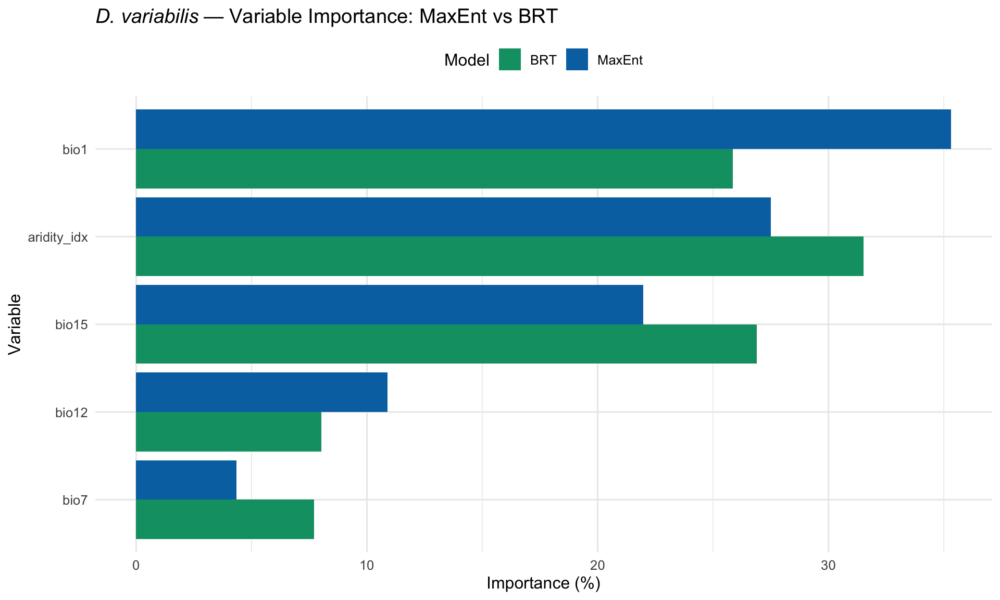

library(tidyverse)
library(terra)
library(dismo)
library(gbm)
library(ENMeval)
library(ecospat)Step 6: Model Evaluation
Dermacentor variabilis Species Distribution Model
Overview
This script evaluates and compares the MaxEnt and BRT models from Steps 5 and 5b. Evaluation includes:
- Discrimination metrics (AUC, TSS, Boyce index)
- Response curve comparison
- Variable importance comparison
- Threshold selection (MaxSS, 10% training presence)
- Spatial cross-validation performance
1. Load models and data
base_dir <- "~/Library/CloudStorage/OneDrive-CSIRO/OneDrive - Docs/01_Projects/SDM/Dvariabilis_SDM"
processed_dir <- file.path(base_dir, "processed_data")
figures_dir <- file.path(base_dir, "figures")
# Models
maxent_model <- readRDS(file.path(processed_dir, "selected_maxent_model.rds"))
brt_model <- readRDS(file.path(processed_dir, "brt_model.rds"))
enmeval_results <- readRDS(file.path(processed_dir, "enmeval_results.rds"))
maxent_metadata <- readRDS(file.path(processed_dir, "selected_model_metadata.rds"))
# Data
occ_env <- readRDS(file.path(processed_dir, "occurrences_with_env.rds"))
bg_env <- readRDS(file.path(processed_dir, "background_with_env.rds"))
selected_vars <- readLines(file.path(processed_dir, "selected_variables.txt"))
env_M <- rast(file.path(processed_dir, "env_selected_M.tif"))
sprintf("MaxEnt: fc=%s, rm=%s | BRT: %d trees, tc=%d",
maxent_metadata$feature_class, maxent_metadata$reg_multiplier,
brt_model$n.trees, brt_model$interaction.depth)[1] "MaxEnt: fc=LQH, rm=1 | BRT: 3800 trees, tc=5"2. Generate predictions on training data
# MaxEnt predictions at occurrence and background points
occ_coords <- occ_env %>% dplyr::select(decimalLongitude, decimalLatitude)
bg_coords <- bg_env %>% dplyr::select(lon, lat)
# Extract env values for prediction
occ_env_vals <- occ_env %>% dplyr::select(all_of(selected_vars))
bg_env_vals <- bg_env %>% dplyr::select(all_of(selected_vars))
# MaxEnt predictions
maxent_pres_pred <- predict(maxent_model, occ_env_vals, type = "cloglog")
maxent_bg_pred <- predict(maxent_model, bg_env_vals, type = "cloglog")
# BRT predictions
brt_pres_pred <- predict(brt_model, as.data.frame(occ_env_vals),
n.trees = brt_model$n.trees, type = "response")
brt_bg_pred <- predict(brt_model, as.data.frame(bg_env_vals),
n.trees = brt_model$n.trees, type = "response")3. AUC calculation
# Function to calculate AUC from presence and background predictions
calc_auc <- function(pres_pred, bg_pred) {
n_pres <- length(pres_pred)
n_bg <- length(bg_pred)
auc <- 0
for (p in pres_pred) {
auc <- auc + sum(p > bg_pred) + 0.5 * sum(p == bg_pred)
}
auc / (n_pres * n_bg)
}
maxent_auc <- calc_auc(maxent_pres_pred, maxent_bg_pred)
brt_auc <- calc_auc(brt_pres_pred, brt_bg_pred)
sprintf("MaxEnt training AUC: %.3f", maxent_auc)
sprintf("BRT training AUC: %.3f", brt_auc)[1] "MaxEnt training AUC: 0.851"
[1] "BRT training AUC: 0.888"4. Boyce index (continuous)
The Boyce index assesses how predictions differ from a random distribution of observed presences. Values close to 1 indicate good model performance.
# MaxEnt Boyce index
maxent_boyce <- ecospat.boyce(
fit = c(maxent_pres_pred, maxent_bg_pred),
obs = maxent_pres_pred,
nclass = 0,
PEplot = FALSE
)
# BRT Boyce index
brt_boyce <- ecospat.boyce(
fit = c(brt_pres_pred, brt_bg_pred),
obs = brt_pres_pred,
nclass = 0,
PEplot = FALSE
)
sprintf("MaxEnt Boyce index (Spearman cor): %.3f", maxent_boyce$cor)
sprintf("BRT Boyce index (Spearman cor): %.3f", brt_boyce$cor)[1] "MaxEnt Boyce index (Spearman cor): 1.000"
[1] "BRT Boyce index (Spearman cor): 1.000"5. Threshold selection
# Function to find optimal thresholds
find_thresholds <- function(pres_pred, bg_pred) {
# Combine predictions
all_pred <- c(pres_pred, bg_pred)
all_obs <- c(rep(1, length(pres_pred)), rep(0, length(bg_pred)))
# Test a range of thresholds
thresholds <- seq(0, 1, by = 0.001)
results <- map_dfr(thresholds, function(t) {
pred_binary <- ifelse(all_pred >= t, 1, 0)
tp <- sum(pred_binary == 1 & all_obs == 1)
fp <- sum(pred_binary == 1 & all_obs == 0)
tn <- sum(pred_binary == 0 & all_obs == 0)
fn <- sum(pred_binary == 0 & all_obs == 1)
sens <- tp / (tp + fn)
spec <- tn / (tn + fp)
tss <- sens + spec - 1
tibble(
threshold = t,
sensitivity = sens,
specificity = spec,
tss = tss,
sum_ss = sens + spec
)
})
# MaxSS threshold (maximises sensitivity + specificity)
maxss <- results %>% filter(sum_ss == max(sum_ss)) %>% slice(1)
# 10% training presence threshold
p10 <- quantile(pres_pred, probs = 0.10)
list(
maxss = maxss,
p10 = p10,
all_results = results
)
}
maxent_thresh <- find_thresholds(maxent_pres_pred, maxent_bg_pred)
brt_thresh <- find_thresholds(brt_pres_pred, brt_bg_pred)
cat("--- MaxEnt Thresholds ---\n")
sprintf("MaxSS threshold: %.3f (TSS = %.3f, Sens = %.3f, Spec = %.3f)",
maxent_thresh$maxss$threshold, maxent_thresh$maxss$tss,
maxent_thresh$maxss$sensitivity, maxent_thresh$maxss$specificity)
sprintf("10%% training presence threshold: %.3f", maxent_thresh$p10)
cat("\n--- BRT Thresholds ---\n")
sprintf("MaxSS threshold: %.3f (TSS = %.3f, Sens = %.3f, Spec = %.3f)",
brt_thresh$maxss$threshold, brt_thresh$maxss$tss,
brt_thresh$maxss$sensitivity, brt_thresh$maxss$specificity)
sprintf("10%% training presence threshold: %.3f", brt_thresh$p10)--- MaxEnt Thresholds ---
[1] "MaxSS threshold: 0.499 (TSS = 0.565, Sens = 0.848, Spec = 0.718)"
[1] "10% training presence threshold: 0.428"
--- BRT Thresholds ---
[1] "MaxSS threshold: 0.521 (TSS = 0.629, Sens = 0.888, Spec = 0.741)"
[1] "10% training presence threshold: 0.494"6. Variable importance comparison
# MaxEnt variable importance
maxent_imp <- read_csv(file.path(processed_dir, "variable_importance_final.csv"),
show_col_types = FALSE) %>%
dplyr::select(variable, permutation.importance) %>%
rename(importance = permutation.importance) %>%
mutate(model = "MaxEnt")
# BRT variable importance
brt_imp <- read_csv(file.path(processed_dir, "brt_variable_importance.csv"),
show_col_types = FALSE) %>%
rename(importance = relative_influence) %>%
mutate(model = "BRT")
# Combine
imp_comparison <- bind_rows(maxent_imp, brt_imp)
ggplot(imp_comparison, aes(x = reorder(variable, importance), y = importance,
fill = model)) +
geom_col(position = "dodge") +
coord_flip() +
scale_fill_manual(values = c("MaxEnt" = "#0072B2", "BRT" = "#009E73")) +
labs(
title = expression(italic("D. variabilis") ~ "— Variable Importance: MaxEnt vs BRT"),
x = "Variable",
y = "Importance (%)",
fill = "Model"
) +
theme_minimal(base_size = 12) +
theme(legend.position = "top")
ggsave(
file.path(figures_dir, "06_variable_importance_comparison.png"),
width = 10, height = 6, dpi = 300
)7. Model agreement assessment
Compare spatial predictions between MaxEnt and BRT to quantify divergence. High AUC for both models does not guarantee they agree spatially — AUC measures rank discrimination within the training region, not transferability.
# Correlation between MaxEnt and BRT predictions at presence points
pred_cor_pres <- cor(maxent_pres_pred, brt_pres_pred, method = "spearman")
pred_cor_bg <- cor(maxent_bg_pred, brt_bg_pred, method = "spearman")
cat("--- Prediction Correlation (Training Data) ---\n")
sprintf("At presence points (Spearman): %.3f", pred_cor_pres)
sprintf("At background points (Spearman): %.3f", pred_cor_bg)
cat("\nInterpretation:\n")
if (pred_cor_pres > 0.7 & pred_cor_bg > 0.7) {
cat(" Models show good agreement in prediction space.\n")
} else {
cat(" Models show divergent predictions. This may reflect:\n")
cat(" - Different variable importance rankings (multicollinearity artefact)\n")
cat(" - MaxEnt's multiplicative feature interactions vs BRT's additive trees\n")
cat(" - Prevalence imbalance effects on BRT threshold calibration\n")
cat(" Ensemble predictions should be interpreted with caution.\n")
}--- Prediction Correlation (Training Data) ---
[1] "At presence points (Spearman): 0.902"
[1] "At background points (Spearman): 0.964"
Interpretation:
Models show good agreement in prediction space.8. Model comparison summary
comparison <- tibble(
Metric = c("Training AUC", "Validation AUC (CV)", "Boyce Index",
"MaxSS Threshold", "TSS at MaxSS",
"Sensitivity at MaxSS", "Specificity at MaxSS",
"10% Training Presence Threshold"),
MaxEnt = c(
round(maxent_auc, 3),
round(maxent_metadata$auc_val, 3),
round(maxent_boyce$cor, 3),
round(maxent_thresh$maxss$threshold, 3),
round(maxent_thresh$maxss$tss, 3),
round(maxent_thresh$maxss$sensitivity, 3),
round(maxent_thresh$maxss$specificity, 3),
round(maxent_thresh$p10, 3)
),
BRT = c(
round(brt_auc, 3),
round(brt_model$cv.statistics$correlation.mean, 3),
round(brt_boyce$cor, 3),
round(brt_thresh$maxss$threshold, 3),
round(brt_thresh$maxss$tss, 3),
round(brt_thresh$maxss$sensitivity, 3),
round(brt_thresh$maxss$specificity, 3),
round(brt_thresh$p10, 3)
)
)
cat("--- Model Comparison ---\n")
print(comparison, n = Inf)
write_csv(comparison, file.path(processed_dir, "model_comparison.csv"))--- Model Comparison ---
# A tibble: 8 × 3
Metric MaxEnt BRT
<chr> <dbl> <dbl>
1 Training AUC 0.851 0.888
2 Validation AUC (CV) 0.824 0.591
3 Boyce Index 1 1
4 MaxSS Threshold 0.499 0.521
5 TSS at MaxSS 0.565 0.629
6 Sensitivity at MaxSS 0.848 0.888
7 Specificity at MaxSS 0.718 0.741
8 10% Training Presence Threshold 0.428 0.4949. Save evaluation outputs
# Thresholds
threshold_data <- list(
maxent = list(
maxss = maxent_thresh$maxss$threshold,
p10 = as.numeric(maxent_thresh$p10),
tss = maxent_thresh$maxss$tss
),
brt = list(
maxss = brt_thresh$maxss$threshold,
p10 = as.numeric(brt_thresh$p10),
tss = brt_thresh$maxss$tss
)
)
saveRDS(threshold_data, file.path(processed_dir, "model_thresholds.rds"))
# Primary threshold for downstream use (MaxEnt MaxSS)
writeLines(
as.character(maxent_thresh$maxss$threshold),
file.path(processed_dir, "primary_threshold.txt")
)
sprintf("Saved model evaluation results and thresholds")[1] "Saved model evaluation results and thresholds"